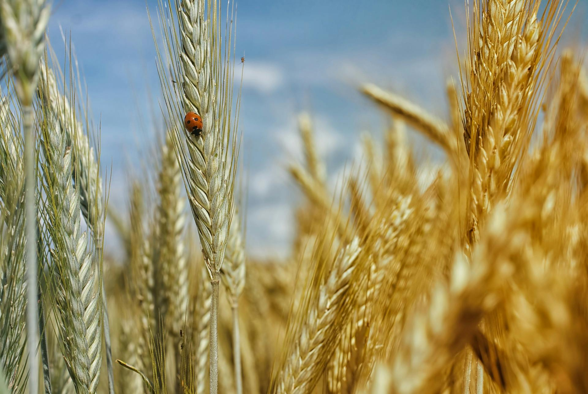

A agricultura sempre foi moldada pelo ritmo da natureza — pelo ciclo previsível das estações, pela regularidade das chuvas, pela temperatura adequada em cada época do ano. Esse equilíbrio climático é o que permite que sementes germinem, plantas cresçam saudáveis e alimentos cheguem às mesas das pessoas.
No entanto, esse equilíbrio está sendo rompido. As mudanças climáticas estão transformando o clima de forma rápida e imprevisível, afetando diretamente as condições ideais para a produção agrícola. Chuvas que antes eram regulares agora se tornam escassas ou intensas demais. Estações estão se tornando indefinidas, e as temperaturas médias estão subindo ano após ano.
Um dos impactos mais visíveis é o aumento da temperatura média. Esse aquecimento pode acelerar o ciclo de vida das plantas, fazendo com que algumas culturas amadureçam rápido demais e produzam menos. Em regiões já quentes, o calor extremo pode inviabilizar completamente o cultivo de certos alimentos. Além disso, o aumento do calor favorece a proliferação de pragas e doenças que atacam as plantações, exigindo mais uso de defensivos e controle sanitário.
Esses impactos já estão forçando muitos agricultores a mudarem seus métodos de produção. Algumas regiões onde era possível cultivar arroz, por exemplo, hoje não têm mais água suficiente. Outras áreas vêm sofrendo com a redução do tempo disponível para plantio devido a alterações nas estações do ano. Isso tudo exige adaptação constante — algo nem sempre possível para agricultores de pequena escala, que muitas vezes carecem de recursos técnicos e financeiros.
Esses efeitos não apenas reduzem a produção e elevam os preços dos alimentos, mas também comprometem a segurança alimentar e a renda de milhões de famílias no campo. É urgente que políticas públicas, pesquisas, agricultores e consumidores estejam alinhados para mitigar os impactos e adaptar a agricultura a uma nova realidade climática.
